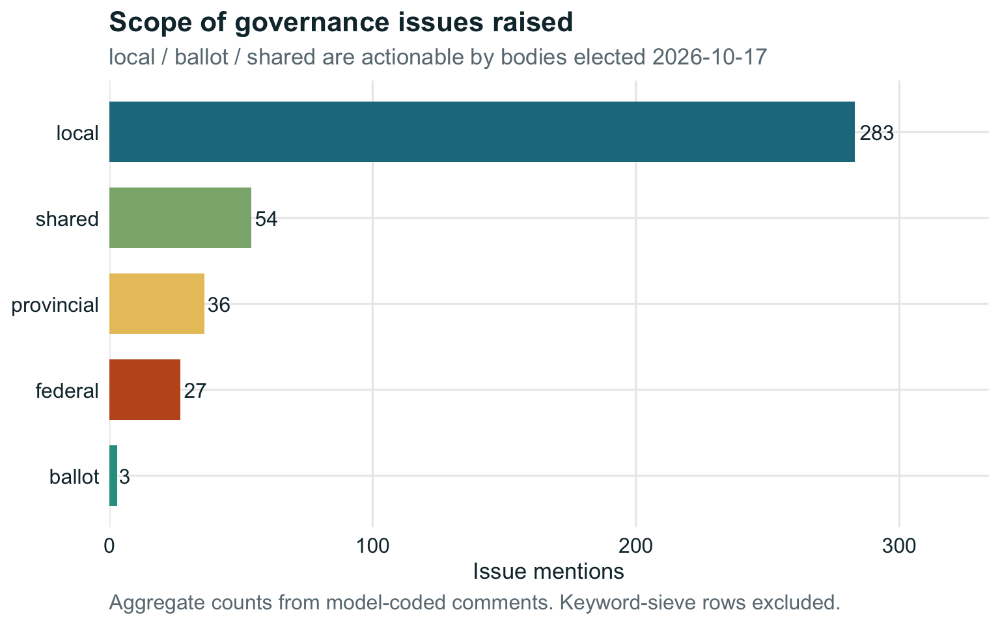
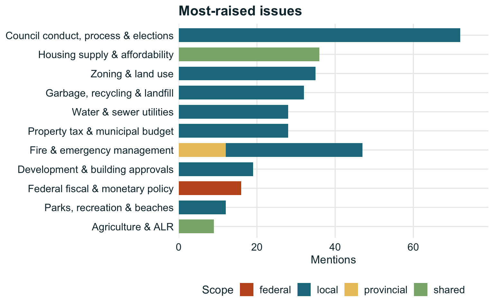
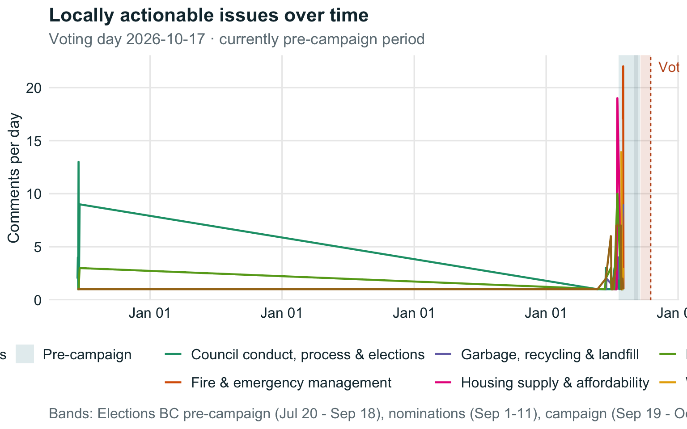
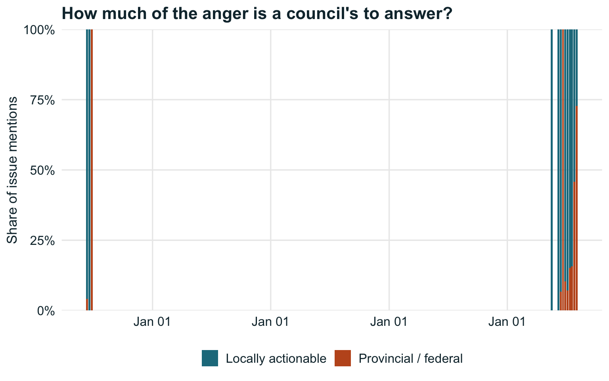
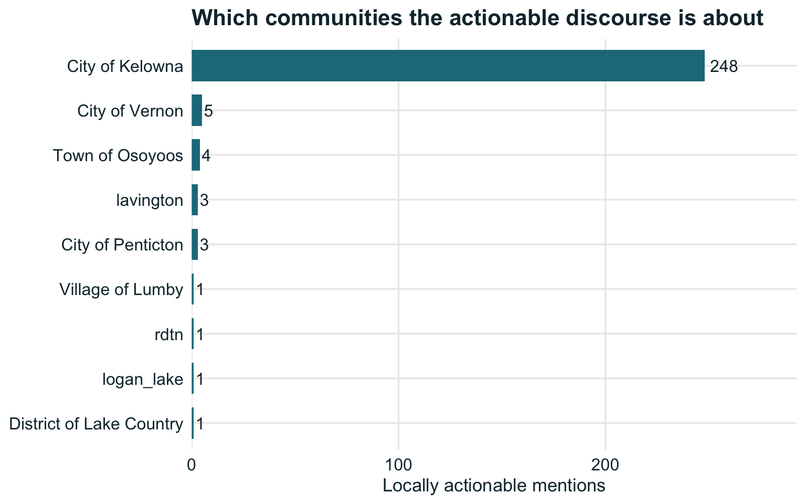
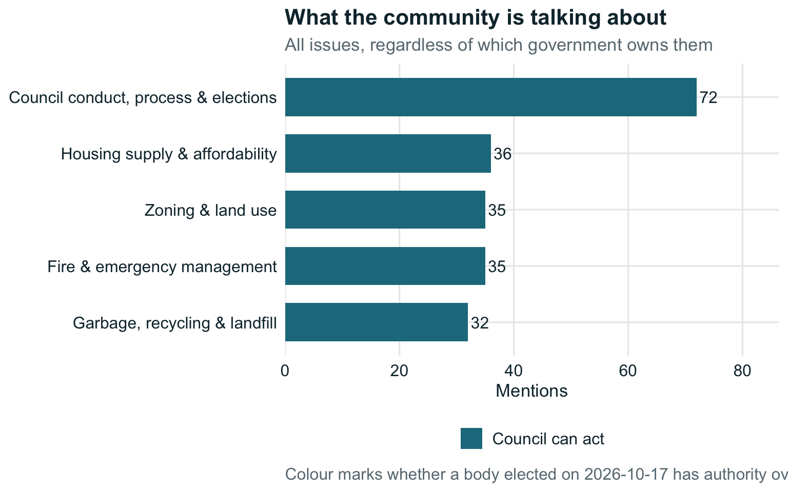
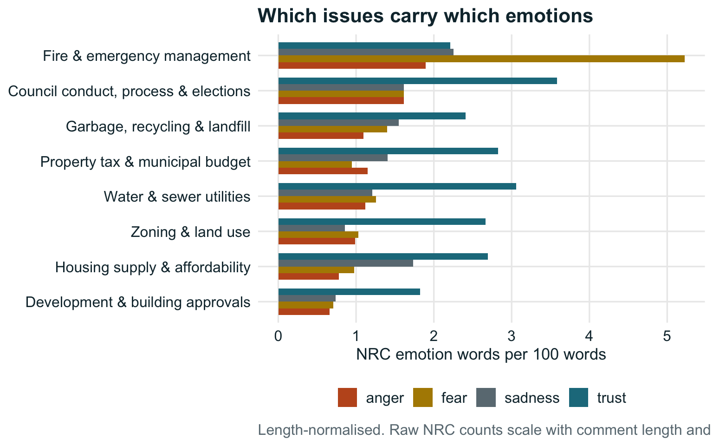
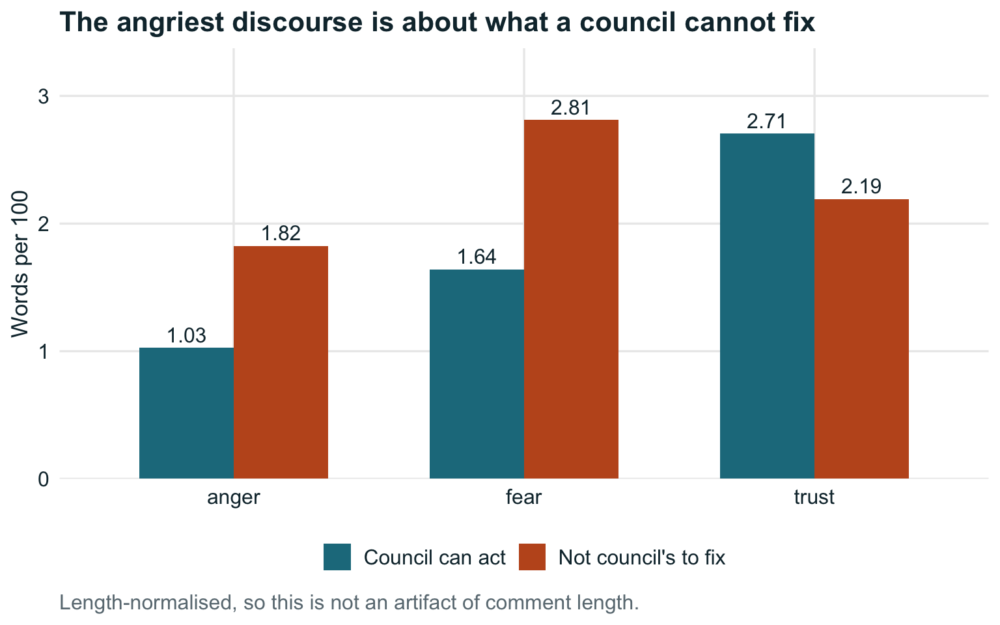

Days to voting day
75
Election phase
pre-campaign period
Comments analysed
817
Locally actionable
66%




| Issue | Scope | Mentions | Posts | Mean salience | Mean confidence |
|---|---|---|---|---|---|
| Council conduct, process & elections | local | 72 | 72 | 0.68 | 0.79 |
| Housing supply & affordability | shared | 36 | 36 | 0.75 | 0.77 |
| Fire & emergency management | local | 35 | 35 | 0.60 | 0.77 |
| Zoning & land use | local | 35 | 35 | 0.81 | 0.88 |
| Garbage, recycling & landfill | local | 32 | 32 | 0.71 | 0.78 |
| Property tax & municipal budget | local | 28 | 28 | 0.55 | 0.76 |
| Water & sewer utilities | local | 28 | 28 | 0.65 | 0.73 |
| Development & building approvals | local | 19 | 19 | 0.75 | 0.84 |
| Federal fiscal & monetary policy | federal | 16 | 16 | 0.42 | 0.70 |
| Fire & emergency management | provincial | 12 | 12 | 0.70 | 0.76 |
| Parks, recreation & beaches | local | 12 | 12 | 0.61 | 0.73 |
| Agriculture & ALR | shared | 9 | 9 | 0.76 | 0.71 |
| Flood, drought & climate resilience | local | 7 | 7 | 0.54 | 0.61 |
| Courts, bail & sentencing | provincial | 7 | 7 | 0.63 | 0.79 |
| Federal & provincial party politics | federal | 7 | 7 | 0.71 | 0.81 |
| Transit & active transportation | local | 6 | 6 | 0.67 | 0.78 |
| ICBC, BC Hydro & Crown corporations | provincial | 5 | 5 | 0.62 | 0.76 |
| Economic development & business | local | 5 | 5 | 0.57 | 0.79 |
| Provincial highways | provincial | 5 | 5 | 0.52 | 0.90 |
| Drug policy & treatment | provincial | 4 | 4 | 0.65 | 0.81 |
| Foreign & world affairs | federal | 4 | 4 | 0.90 | 0.88 |
| Local roads, traffic & parking | local | 4 | 4 | 0.38 | 0.70 |
| Policing, bylaw & community safety | shared | 3 | 3 | 0.63 | 0.77 |
| Water & sewer utilities | shared | 3 | 3 | 0.85 | 0.76 |
| Homelessness & social services | shared | 2 | 2 | 0.65 | 0.78 |
| Council conduct, process & elections | ballot | 1 | 1 | 0.80 | 0.75 |
| Health care | provincial | 1 | 1 | 0.20 | 0.60 |
| Housing supply & affordability | provincial | 1 | 1 | 0.90 | 0.85 |
| Regional district services | ballot | 1 | 1 | 1.00 | 0.90 |
| Local roads, traffic & parking | provincial | 1 | 1 | 0.40 | 0.70 |
| School board & trustees | ballot | 1 | 1 | 0.85 | 0.88 |
| Short-term rentals | shared | 1 | 1 | 0.50 | 0.75 |
| Measure | Value |
|---|---|
| Actors (nodes) | 155 |
| Directed reply edges | 259 |
| Density | 0.0109 |
| Components | 14 |
| Largest component | 119 (77%) |
| Global transitivity | 0.202 |
| Mean distance (giant) | 6.51 |
| Reciprocity | 0.284 |
Quote-replies are the only unambiguous reply signal in a flat phpBB thread, so this graph is sparse by construction and understates real interaction. A co-participation network (R/sna.R) is reported alongside it in the analysis layer; conclusions should not rest on the reply graph alone. ERGM is fitted weekly, not daily, and is suppressed rather than shown if it fails to converge.

Comments on Castanet’s public phpBB forums are coded against a codebook of BC local-government competencies drawn from the Community Charter and Local Government Act. The central judgement is scope: whether an issue is one a municipal council or regional board can act on, or a provincial/federal matter being directed at city hall.
ballot is deliberately separate from local — school trustees and regional district electoral area directors are not municipal, but their seats are on the same 2026-10-17 ballot.
A keyword sieve decides which comments are worth a model call. The sieve is a recall filter, not a finding — every figure on this dashboard excludes sieve rows and uses model codes only.
The gate requires at least one locally-actionable candidate code. Comments whose only matches are federal or provincial (foreign affairs, party politics, courts, provincial highways) are not sent to the model, which cut eligible comments by 28% on the pilot corpus.
Bulk coding runs on a small model; a stratified sample is re-coded by a larger one to measure agreement. The audit sample deliberately includes comments the gate skipped, so the false-negative rate is estimated rather than assumed.
| run_at | mode | threads_seen | posts_new | errors |
|---|---|---|---|---|
| 2026-08-03 07:57:27 | backfill | 40 | 467 | 0 |

| Issue | Scope | Owner | Mentions | Share of top 5 |
|---|---|---|---|---|
| Council conduct, process & elections | local | Elected 2026-10-17 | 72 | 34% |
| Housing supply & affordability | shared | Elected 2026-10-17 | 36 | 17% |
| Fire & emergency management | local | Elected 2026-10-17 | 35 | 17% |
| Zoning & land use | local | Elected 2026-10-17 | 35 | 17% |
| Garbage, recycling & landfill | local | Elected 2026-10-17 | 32 | 15% |
Scope distinguishes local (direct municipal authority), ballot (school trustees and regional district electoral area directors — not municipal, but on the same ballot), and shared (a real local role, province holds the main levers). Filter boxes above each column are live; the CSV button exports what you have filtered to.


| Source | Platform | Access | Days | Posts | Coded | In-scope/day | % in scope | Concentration | Novel issues |
|---|---|---|---|---|---|---|---|---|---|
| kelowna_escribe | escribe | open | 6 | 134 | 45 | 7.5 | 100% | 1.00 | 3 |
| castanet_forums | phpbb | open | 54 | 683 | 269 | 4.2 | 84% | 0.48 | 16 |
| Source | Name | Platform | Access | Cost | Reply edges | Active |
|---|---|---|---|---|---|---|
| westkelowna_ourwk | Engage West Kelowna | engagementhq | open | free | no | no |
| castanet_forums | Castanet News Comments + discussion forums | phpbb | open | free | yes | yes |
| reddit_okanagan | r/okanagan | blocked_by_policy | same as reddit_kelowna - parked | yes | no | |
| kelowna_getinvolved | Get Involved Kelowna (public engagement) | engagementhq | open | free | no | yes |
| castanet_kamloops | Castanet Kamloops | phpbb | open | free - same parser as castanet_forums | yes | no |
| reddit_kelowna | r/kelowna | blocked_by_policy | free tier exists but is NOT an available path: research must go via Reddit for Researchers (RFR) | yes | no | |
| kelowna_escribe | City of Kelowna council agendas, minutes, correspondence | escribe | open | free | no | yes |
Sources are not interchangeable. Only platforms with stable pseudonymous IDs and resolvable reply structure (Reply edges = yes) can support network analysis at all; the rest contribute volume, issue mix and sentiment only. In-scope/day — locally actionable comments per active day — is the honest headline, because it rewards a source for producing material a council can act on rather than for sheer volume. Access postures were verified on the dates recorded in the registry and should be re-checked before any new crawl.